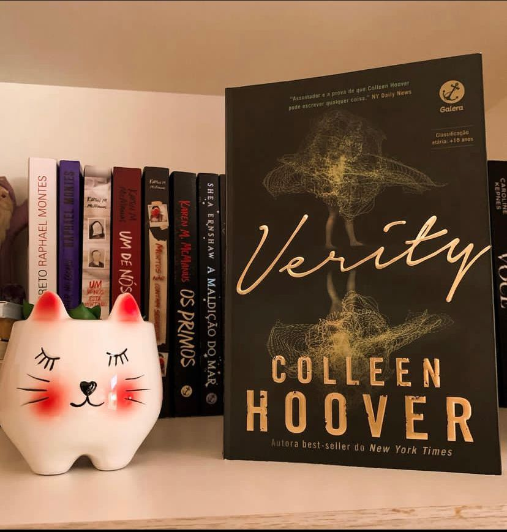

Verity

⭐⭐⭐
⚠️Gatilhos: Abuso físico e psicológico, Violência.
Minha mãe dizia que as casas têm alma. Se isso for verdade, a alma da casa de Verity Crawford é a mais sombria que eu já vi.
Depois de não ter curtido “Layla” e achado bem previsível, resolvi dar mais uma chance a Colleen e pela sinopse escolhi Verity, e achei novamente previsível e até um pouco cansativo.
Verity Crawford é uma autora por trás de um best seller que é uma série de sucesso. No auge de sua carreira Verity sofre um terrível e inesperado acidente, deixando-a sem condições de concluir os livros da série que ainda faltam.
Lowen Ashleigh uma escritora tímida, pouco conhecida e a beira da falência entra na jogada com a missão de escrever sob um pseudônimo os três livros faltantes da série. Para entrar no clima ela decide passar uns dias na casa de Verity e acaba encontrando uma espécie de autobiografia onde a escritora narra os fatos acontecidos desde o dia em que conhece Jeremy, seu marido, até os instantes imediatamente anteriores a seu acidente - incluindo sua perspectiva sobre as tragédias ocorridas às filhas do casal. E então você percebe que nada é o que parece!
A premissa do livro é muito boa e você acaba lendo rápido. A narração fica a cargo de Lowen e nós vamos a cada capítulo conhecendo mais sobre a personagem e seus desejos proibidos, a dinâmica da casa e sobre quem realmente é Verity.
O que eu não gostei é que em muitos momentos tudo fica muito repetitivo e parado virando “mais do mesmo” e em pouco tempo já vai ficando previsível o desenrolar da trama.
A autora, conhecida por escrever romances tentou fazer algo diferente mas, não funcionou muito. Coleen realmente tem uma escrita muito boa que prende o leitor e mesmo quando o assunto não agrada consegue manter a narrativa.
Vale a pena fazer a leitura mas, não vá com expectativas altas.
O livro possui gatilhos e cenas gráficas de tentativa de abordo e assassinato. Não dá pra falar muita sem spoilers.